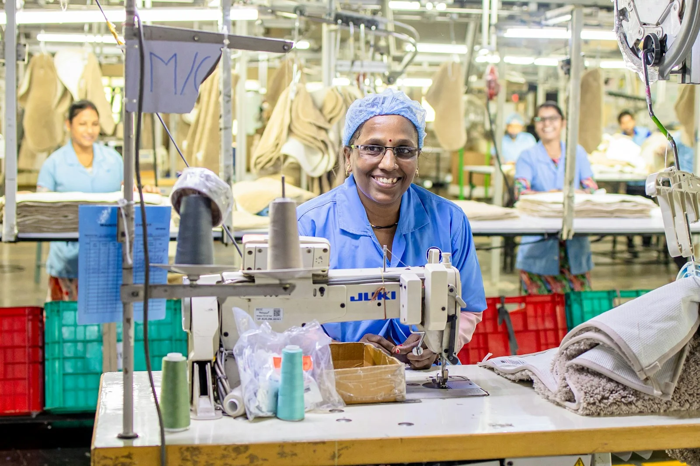
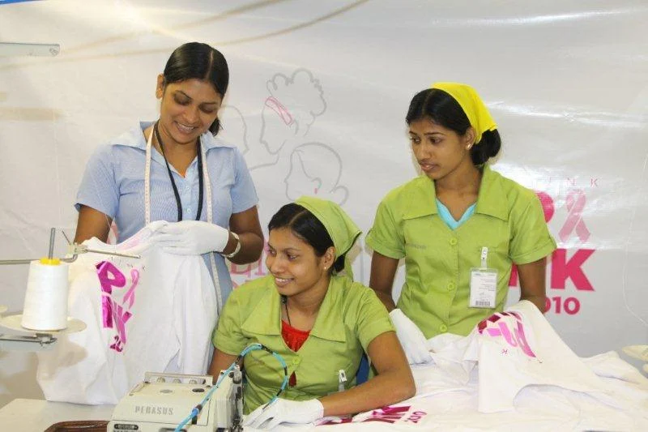

Швейное производство
Швеи, раскройщики и специалисты производственных операций. Проверка навыков на ваших материалах и типах оборудования — по согласованному заданию.
 PRIME HARBOR
PRIME HARBOR
Шри-Ланка → Россия · Подбор персонала
Подбираем работников из Шри-Ланки под конкретные вакансии российских предприятий. От первого списка профессий до выхода сотрудников на работу.
Начинаем с нуля — даже если вы ещё не нанимали иностранных работников.

01 / Для работодателей
Когда местный рынок труда не даёт нужного количества сотрудников, международный подбор помогает планировать смены, новые участки и сезонные работы.
Мы опираемся на опыт команды в международных проектах и практическую работу с партнёрами в России и Шри-Ланке. Организуем подбор отдельных специалистов и групп под согласованный производственный план.
Начинаем с профессии и реальных задач на вашем предприятии. Квалификацию, наличие кандидатов и возможность оформления подтверждаем по каждой заявке.
Швеи, раскройщики и специалисты производственных операций. Проверка навыков на ваших материалах и типах оборудования — по согласованному заданию.
Работники ферм, растениеводства и сбора урожая, операторы сельскохозяйственного оборудования. Подбор под сезон и график предприятия.
Упаковщики, подсобные рабочие и сотрудники вспомогательных производственных операций. Уточняем требования к опыту, сменности и безопасности.
Уборка, гостиничный и ресторанный сервис. Специалистов по уходу рассматриваем отдельно, с проверкой языка, квалификации и условий работы.

Фотографии иллюстрируют направления работы; изображённые люди не представлены как сотрудники или кандидаты Prime Harbor.
Источники фотографийРазвитая экспортная швейная отрасль даёт базу кандидатов с практическими навыками. Оцениваем опыт под конкретное рабочее место.
По опыту нашего партнёра на Шри-Ланке, кандидаты дружелюбны, доброжелательно относятся к России и готовы учить русский. Знание английского проверяем на собеседовании.
В 2024 и 2025 годах число выездов из Шри-Ланки на работу за рубеж превышало 300 тысяч в год, по данным Центрального банка страны.
Набор организуем через лицензированное агентство. Согласуем требования с работодателем, проверяем навыки и готовим кандидатов к переезду.
Четыре этапа с согласованными задачами и ответственностью сторон.
Уточняем регион, профессии, численность, навыки, график, зарплату, проживание и желаемую дату выхода. Для первого разговора достаточно списка вакансий.
Консультируем по квоте и необходимым разрешениям. Помогаем подготовить региональную заявку или скорректировать действующую квоту. Проверяем законные основания и ограничения.
Согласуем заказ работодателя, организуем поиск через партнёров на Шри-Ланке, собеседования и проверку навыков. Окончательное решение по каждому кандидату принимаете вы.
Координируем разрешения, приглашения и рабочие визы, подготовку к переезду и прибытие. Сопровождаем обязательные процедуры, размещение и адаптацию в согласованном объёме.
Заявленная потребность российских работодателей в работниках из Шри-Ланки на 2026 год.
Расчёт Prime Harbor по трём приложениям к приказу Минтруда № 471 от 6 октября 2026 года (код страны 144). Это планируемое привлечение, а не список незакрытых вакансий и не свободный остаток квот. Для найма в 2027 году проверяем основания и квоты на 2027 год.
Фиксируем зарплату до удержаний и к выплате, налоги, график, сверхурочные, проживание и питание. Кандидат должен понимать условия работы до принятия решения.
Согласуем вознаграждение, этапы оплаты и условия замены. Отдельно рассчитываем документы, пошлины, страхование, медицинские процедуры, перелёт и встречу. Сроки определяем после проверки заявки.
Следующий шаг
Пришлите список вакансий, численность и регион работы. Обсудим порядок найма и предложим план подбора, сроки и стоимость.
Отправить заявку по почтеВаш контакт
ИП Емцов Игорь НиколаевичIgor Nikolaevich Emtsov · Individual Entrepreneur
ИННINN 771775465300ОГРНИПOGRNIP 324774600712532
ИП Вималагунасекара Егода Витаранаге Сриянка ВимашанVimalagunasekara Egoda Vitaranage Sriyanka Vimashan · Individual Entrepreneur
ИННINN 366239681282ОГРНИПOGRNIP 326366800077707